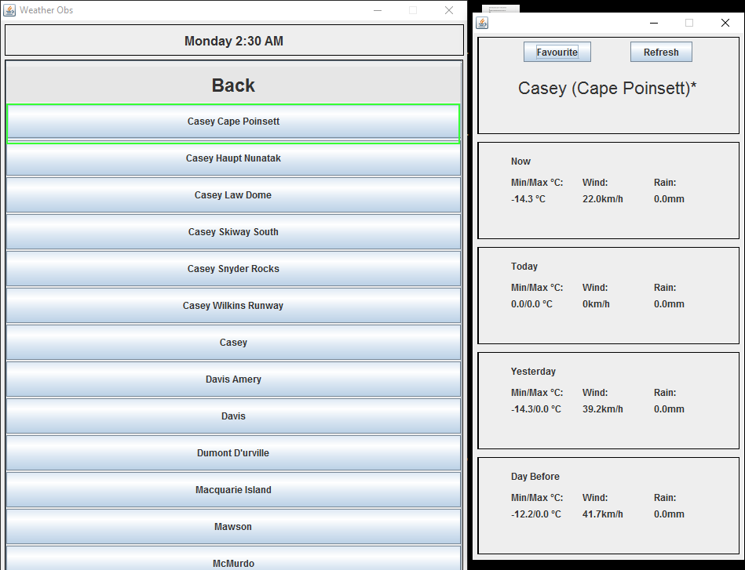
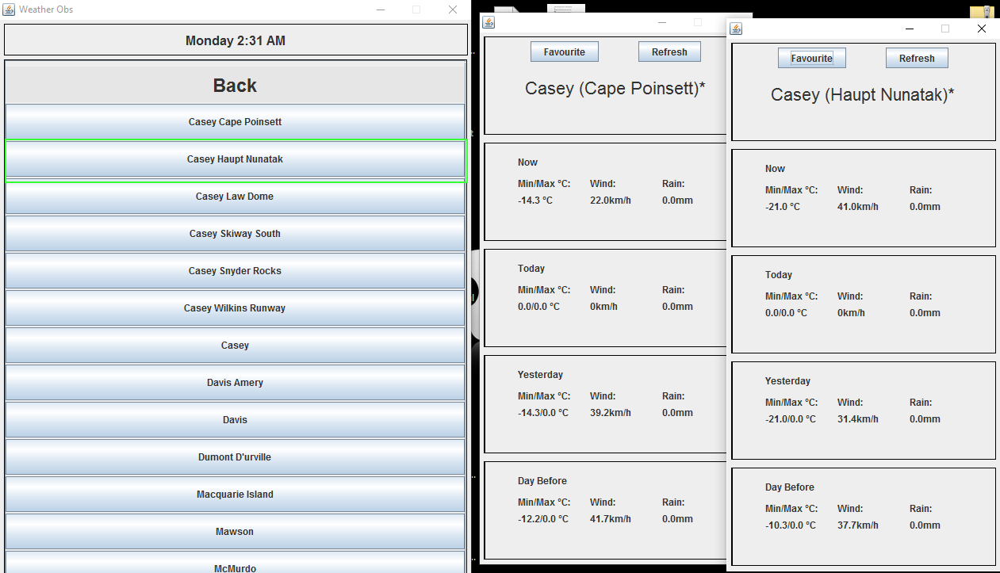
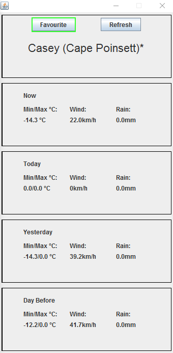

1. Download SEPTa1.jar file and input.json
2. Execute SEPTa1.jar file
1. Select the state that your desired station belongs to.

2. Selecting a station will open a new window displaying it's recent weather information.
3. The program is capable of displaying multiple windows of weather information from different stations.
1. On a station window, you can toggle the favourite button to favourite or un-favourite a station.
2. Favourite stations are displayed on the main menu under the favourite's section.

3. To remove a station from your favourites, simply select one and toggle the feature on the station window.
All information is derived from www.bom.gov.au and this program stores the url
of each station site in a local JSON file.